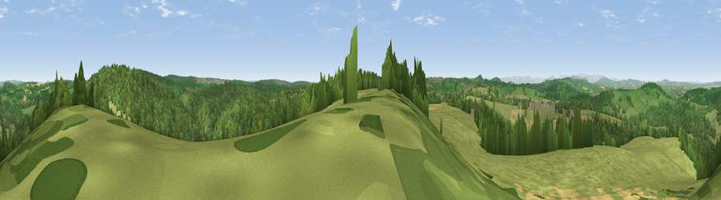

Viewpoint near Upper Lydbrook
#7205 in England · top 17% of its area beats it · near Upper LydbrookWhere it is
The exact computed spot (SO 59676 15472). Click the marker for map links.
The view, rendered

A 360° render of this exact spot computed from the terrain model, tree cover and land cover — summer colours, afternoon light, calibrated against photographs of famous viewpoints. Real trees, hedges and buildings will differ in detail.
The panorama
Grey silhouette: terrain skyline in each direction (720 bearings, Earth curvature and refraction included). Dashed green: skyline with trees (+15 m) and buildings (+8 m) as obstacles. Blue strip: how far the ground is visible on each bearing.
Where the view opens
Wedge length = distance to the farthest visible ground on that bearing (vegetation-aware). Rings at 10, 25 and 50 km.
What fills the view
51% grassland · 42% woodland · 6% cropland · 1% built-up
Angular shares of the visible panorama (visual magnitude), not map area. Landscape diversity 0.41 (0–1 Shannon).
Key numbers
More beautiful places nearby
The staircase of upgrades: each row has a higher view potential than everything closer. Driving times are estimates from straight-line distance, calibrated against real road routing — check an actual route before setting out.
| Place | Direction | Drive | Score |
|---|---|---|---|
| Viewpoint near Ruardean | NE · 3 km | ~8 min | 74.2 |
| Chase Wood Hill | N · 7 km | ~15 min | 77.6 |
| Viewpoint near Orcop Hill | NW · 18 km | ~31 min | 79.9 |
| Viewpoint near Orcop Hill | NW · 18 km | ~31 min | 80.7 |
| Garway Hill | WNW · 19 km | ~32 min | 84.6 |
| Millennium Hill | NNE · 29 km | ~46 min | 86.9 |
| Worcestershire Beacon | NNE · 34 km | ~52 min | 87.1 |
| Viewpoint near West Quantoxhead | SSW · 87 km | ~111 min | 87.9 |
51.83639, -2.58663 · source: osm peak · position refined by local search. Computed location — check access rights before visiting.